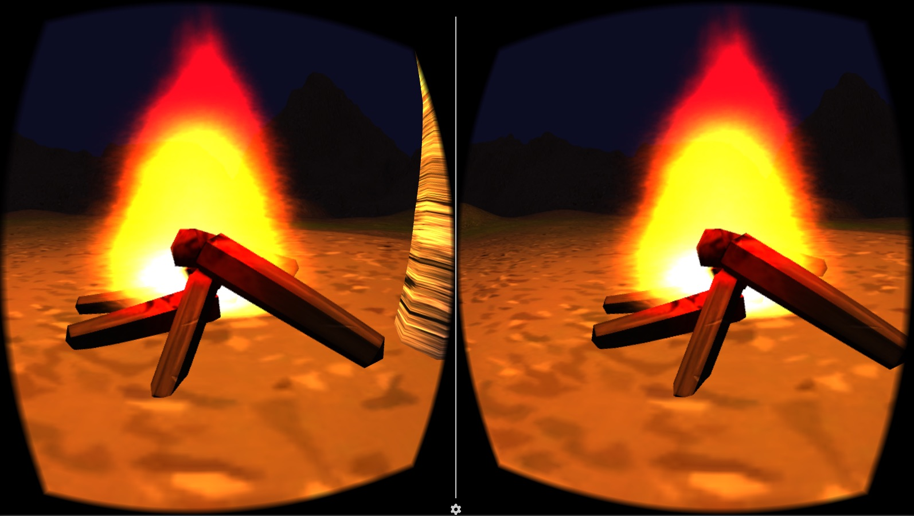
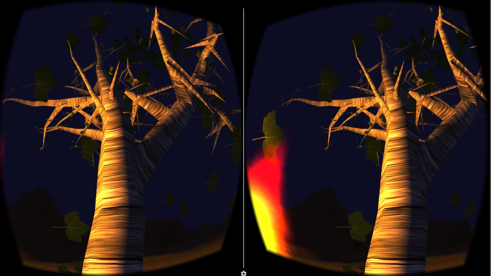
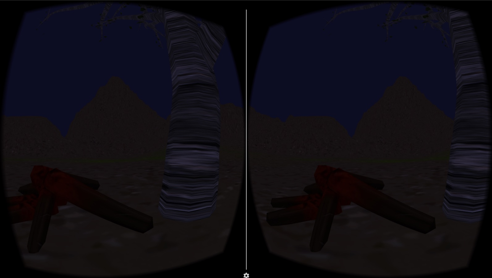
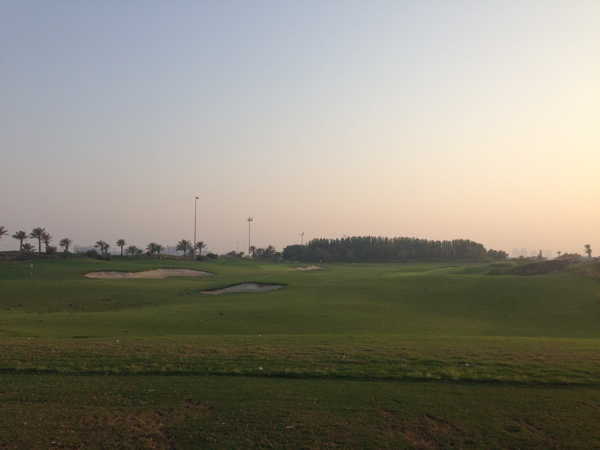

Here is my idea for my second project:

For the second project I would like to create a planetarium where users can lie down on the floor (or sit on a reclined chair) and look up at the sky. This can be done with almost no external assets, with only the use of point light sources positioned correctly.
Interactions
One interaction would be, by pointing the hand controller towards the starts, lines would appear for that specific set of starts to show its constellation. A description and the of the constellation should also appear.
Another interaction would be the ability to change the speed of time, so that the stars would rotate at faster or slower speeds.
An extra feature would be to show some auroras.
UI System
A potential UI system could be some sort of swiping motion in the air to make the start rotate faster or slower. In addition, one of the controllers could have a simple calendar with 4 seasons and a map that allows you to change the location of the sky that you are looking at (based on where you click on the map) and a map that calendar that shows stars of the different seasons.
I love cinematography and one of the most exciting parts about it is lighting. In the virtual world we have complete control over the lighting so I wanted to create an environment that makes use of our control over lighting.
I also love spending time in the nature. One of the best things about traveling alone, or camping alone is that you can be surrounded with nature without the presence of any other humans. The scariest part about camping is at night when you have no one around you. The only presence you feel is the warmth of a fire (if you have a camp fire) and the breeze going through the air.
My interaction involves getting the viewer to be aware of the efforts it takes to be alone. If the viewer does not take care of the fire, the fire will die out, and the viewer will be alone in the darkness. If the viewer takes care of the fire, the fire will get warmer. If the fire completely dies out, you may completely lose track of where your fire pit is.
Some development details:
The tree has a box collider on it so that you can shake it. Since the collider only surrounds the tree trunk, even if you interact with the small branches, nothing will happen.
If you take care of the fire very well, it will burn very bright.
If you interact with the tree, leaves will fall onto you. The more you interact with the tree, the more leaves will fall.
If you don't take care of the fire, it will become very dark. You can see mountain ranges in the distance.
Here is an interaction I like:

I like job interviews. I like them because both parties are usually fully engaged and both parties have a clear agenda. They usually have a time-limit and they are usually with someone you’ve never met before. But you usually have to try your best to present yourself fully in the limited time. This is such an incredible interaction that you rarely have when meeting people, or friends under normal circumstances.
I also love the interaction because there are clear rewards involved. It is not like small talk with your friends that don’t take you anywhere. A job interview can get you a job. You want the interaction to leave a lasting impression. I think I can recall all of the job interviews I’ve ever done. Maybe I only remember them because I’ve done so few.
I actually view job interviews more as sales pitches. I’ve never really done a sales pitch in my life but I imagine it’s similar. Just that instead of selling yourself, you are selling a product. In either case, I think the interaction is great because you put so much concentration and energy into an interaction with another human being. It’s almost like when you are trying to impress someone you like.
Here is an environment I like:
This is Saadiyat Beach Golf Club in the afternoon. It is only 10 minutes away from Saadiyat campus but it feels like you are in a completely different country. In the distance, you can see NYU Abu Dhabi and even further away, you can see the skyline of Abu Dhabi city.
You feel isolated from the familiar faces at NYU Abu Dhabi but you dont feel alone. There are other golfers at the driving range with you. The greatest part about this environment is the sea breeze you can feel from the ocean to your right.
You are surrounded by so much green. And the driving range is there for you to hit golf balls as far as you like. It is a wonderful get away from your typical Abu Dhabi life.
Once the sun sets, the artificial lights come on to light up the driving range. In the distance you now see the Abu Dhabi skyline with a glow from its city lights. You can continue to practice if you like, but the lights are not quite bright enough to see where your balls fly to. You know its time to go home.